用AI贯通建筑与结构设计全流程 | 新论文：面向独立住宅建筑与结构AI辅助设计的扩散模型分布生成流程
AI贯通建筑结构设计全流程
开启建筑结构协同生成新范式
面向独立住宅建筑与结构AI辅助设计的扩散模型分步生成流程
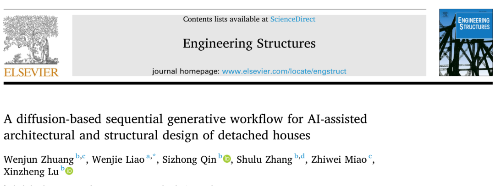
论文首页： Engineering Structures 370 (2027), 123934
论文： Zhuang W, Liao W, Qin S, Zhang S, Miao Z, Lu X. A diffusion-based sequential generative workflow for AI-assisted architectural and structural design of detached houses.
Engineering Structures, 2027, 370: 123934.
DOI：10.1016/j.engstruct.2026.123934
50天免费在线阅读与下载：https://authors.elsevier.com/c/1nvpbW4G4mlgn
视频介绍
00
太长不看版
从建筑需求出发，AI能否一路生成到可通过结构验算的设计方案？本研究面向独立住宅，贯通户型、门窗墙、柱布置、梁布置、梁柱截面与结构验算，建立从建筑需求到结构性能验证的AI辅助初步方案设计全流程。
贯通流程的关键，是让建筑生成结果成为结构设计可以直接利用的条件。研究通过迁移学习、多通道特征表达与任务约束，打通各阶段的数据传递，并接入已有梁布置、截面预测及PKPM模块，形成AI连续生成、工程师协调修正、结构计算验证的人机协同设计方式。
用三个三层住宅案例完成了整套流程，经人工微调后的PKPM力学指标均满足论文采用的规范限值。平均用时由 437分钟 降至 39分钟，减少约 91%，其中包含必要的人工检查与修正。这为AI从单项任务走向建筑与结构全流程设计提供了工程案例验证。
01
研究背景
一栋住宅的设计，需要把房间需求转化为户型，再确定门窗墙、梁柱位置和构件截面，最终接受结构计算检验。AI若要参与这条完整设计链，就需要跨越建筑与结构之间的信息断点。
已有AI研究多聚焦单项任务：户型生成往往止于房间布局，结构设计则通常依赖已有或人工整理的建筑信息。建筑模型的输出如何进入结构模型，仍缺少贯通的设计流程。独立住宅功能与外轮廓多样、真实数据有限，又增加了跨阶段生成的难度。
本研究将AI设计流程的起点前移到建筑需求，将终点延伸到结构性能验证。以独立住宅为对象，研究建立跨阶段的数据表达与生成条件，让建筑方案逐步转化为可分析的结构方案，探索建筑与结构全流程AI辅助设计的新范式。
02
如何贯通全流程？
整体流程见图1。本研究通过跨阶段特征表达与任务约束，将上游生成结果转化为下游模型可利用的设计条件，使建筑空间、建筑构件和结构构件在统一流程中连续生成。在此基础上，针对独立住宅适配生成模型，并连接梁布置、截面预测及PKPM验证模块，贯通从建筑需求到结构验算的设计过程。
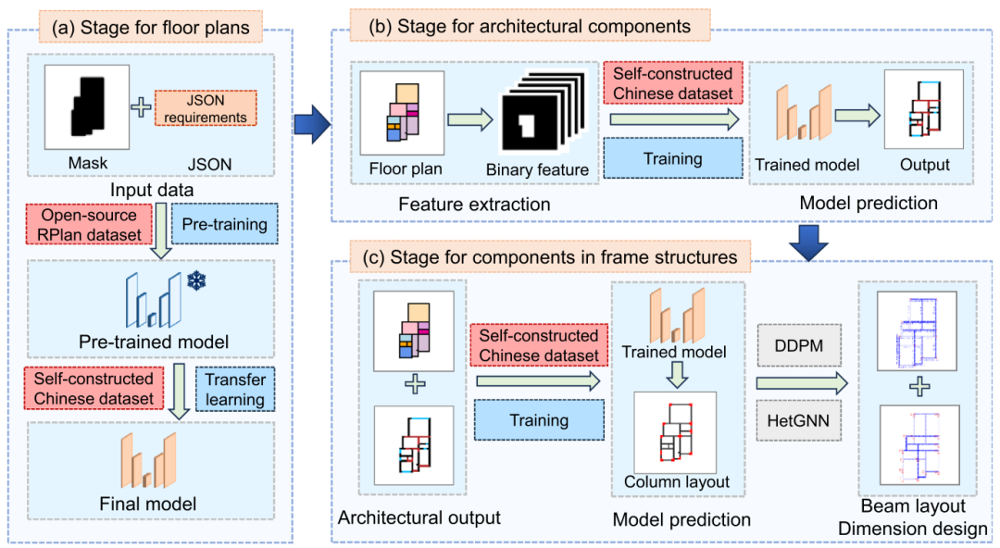
图1 从户型到建筑构件，再到框架结构的分步生成流程
需求＋建筑外轮廓
↓
户型 → 门窗墙 → 柱 → 梁 → 截面
各阶段均包含必要的人工检查与修正
↓
PKPM计算验证
2.1 户型生成
本研究从193套独立住宅施工图中整理出318个楼层样本。针对数据量有限的问题，研究采用迁移学习：先让ChatHouseDiffusion在RPLAN的8万多个有效样本上预训练，再用自建独立住宅数据进行全参数微调，把已有的空间布局经验适配到新的设计对象。
输入包括建筑外轮廓和结构化房间需求。房间类型、数量、连接关系、相对大小和方位以JSON表示，外轮廓则约束生成范围。这样，模型既知道“需要哪些空间”，也知道“这些空间要放进什么边界”。
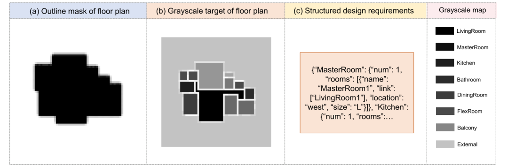
图2 户型生成的输入：建筑外轮廓、房间布局标签与结构化需求
2.2 门窗墙生成
完成房间布局后，进一步生成门窗墙。为将户型信息输入后续模型，本研究将13类室内空间与外部区域分别表示为特征通道，形成14通道条件张量；外墙、内墙、窗以及门和开放空间分隔则作为4类生成目标。
房间边界用于构建可生成区域的掩膜，限定构件可以生成的位置。在房间类型和边界信息的共同约束下，模型学习门窗墙的具体布置，使户型中的空间语义与几何关系成为建筑构件生成的条件。
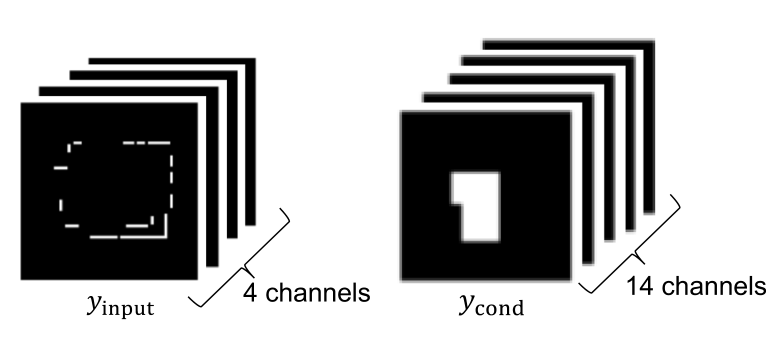
图3 将房间信息与建筑构件分通道表达
2.3 柱布置生成
柱布置模型同时读取房间布局和建筑构件信息，把这些信息作为18通道条件输入，引导框架柱生成。柱中心在图上只是一个点，直接用单个像素训练，信号容易过于稀疏。因此，研究沿相连建筑构件方向适度扩展柱中心标签，提高可学习的空间密度，同时保留原有柱中心位置。
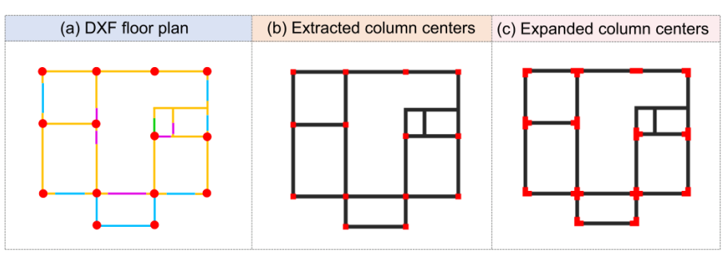
图4 柱中心提取与像素扩展：让稀疏的位置标签更容易被学习
2.4 梁布置、截面设计与结构验证
柱布置确定后，流程调用已有的工程规则掩膜约束扩散模型生成梁布置，并通过异构图神经网络预测梁柱截面尺寸，最后连接PKPM建模计算。由此，建筑生成结果经过跨阶段转换，进入结构设计与计算验证，完成从建筑需求到结构方案的全流程衔接。
03
各环节的生成效果
3.1 先积累经验，再迁移学习，效果如何？
表1对比了迁移学习与直接训练。迁移学习在布局重叠、房间数量、房间类型和邻接关系等指标上均取得更好的结果。其中，IoU衡量生成布局与参考布局的重叠程度：Micro IoU从整体像素统计重叠，Macro IoU对各类别的IoU取平均；房间数量F1、房间类型F1和房间邻接指标分别评价数量、类型与相邻关系的一致性。
| 指标 | 直接训练 | 迁移学习 |
|---|---|---|
| 0.6165 | ||
| 0.5223 | ||
| 0.6926 | ||
| 0.6272 | ||
| 0.4970 |
表1 户型生成测试集结果
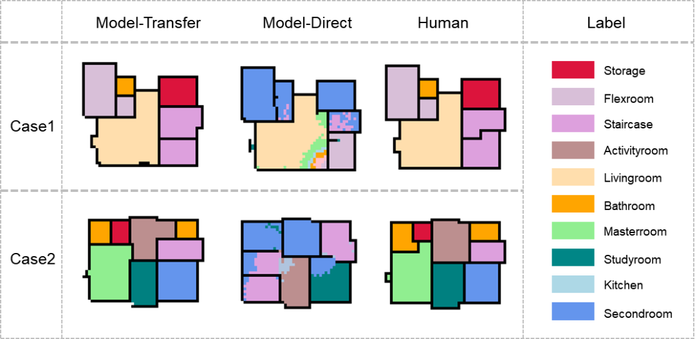
图5 迁移学习、直接训练与人工户型的典型对比
3.2 从户型到门窗墙，生成效果如何？
门窗墙生成以房间布局为条件，并通过掩膜约束构件的可生成位置。表2对比了有无掩膜时的生成指标：加入掩膜后，Micro IoU从0.7114提高到0.7479，连接关系F1从0.6011提高到0.6290。掩膜约束改善了整体布置的一致性，其中窗的IoU变化较小。
| 指标 | 无掩膜 | 有掩膜 |
|---|---|---|
| 0.6716 | ||
| 0.4761 | ||
| 0.5444 | ||
| 0.5640 | ||
| 0.7479 | ||
| 0.6290 |
表2 门窗墙生成的掩膜消融对比
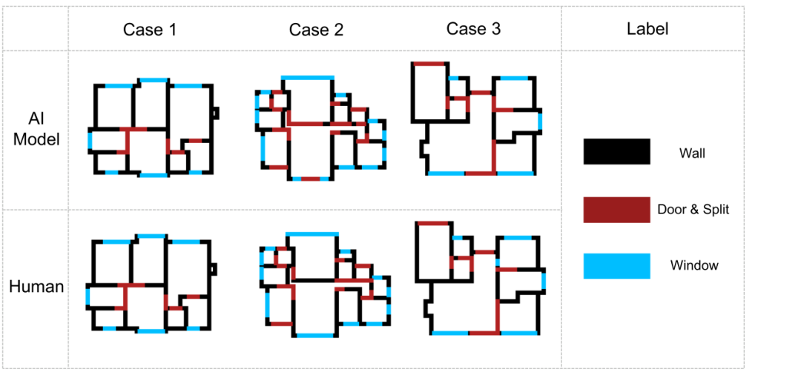
图6 建筑构件生成与人工布置对比：墙、门与空间分隔、窗
生成的整体形态接近参考方案，局部细节仍可能出错。例如，图6中间一列的Case 2（对应论文图5的Case 2），模型在参考设计原本为窗的位置生成了入户门。这一差异可能与按楼层生成时未显式关联首层入口布置有关，后续可通过跨楼层协调、规则调整或人工修正加以处理。
3.3 传给柱布置的建筑信息，是否有用？
在门窗墙生成之后，柱布置模型进一步读取房间布局与建筑构件信息。表3显示，去掉建筑构件条件后，IoU降至0.7079；去掉柱中心像素扩展后，IoU为0.7615；同时保留二者时，IoU达到0.7885。上游建筑信息和柱中心像素扩展均有助于提高柱布置的生成效果。
| 柱布置设置 | 平均IoU |
|---|---|
| 0.7885 |
表3 柱布置模型的消融对比
04
全流程工程验证
各环节的测试验证了模型适配与信息传递的作用。进一步，我们从建筑需求出发，通过三个住宅案例检验整套流程能否连续完成方案生成、结构设计与性能验证。
4.1 从建筑需求出发，完成三栋住宅设计
三个案例均来自真实项目中的三层独立住宅，以各层房间需求和建筑外轮廓作为输入。三个案例均在论文设定的7度抗震条件下进行设计，其中，案例1和案例2的设计基本地震加速度为0.10g，案例3为0.15g。
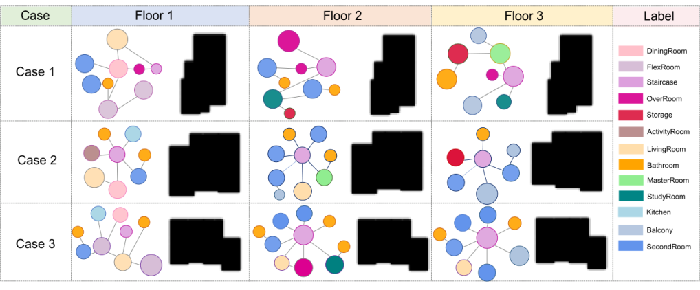
图7 三个案例的房间需求气泡图与各层建筑外轮廓
从图8可以看到，AI先给出初始户型，再由工程师在CAD中修正边界、房间功能与楼层关系，将修正后的户型交给门窗墙生成模型。各阶段均按照先生成，再检查和协调，再交给下一阶段的顺序推进。
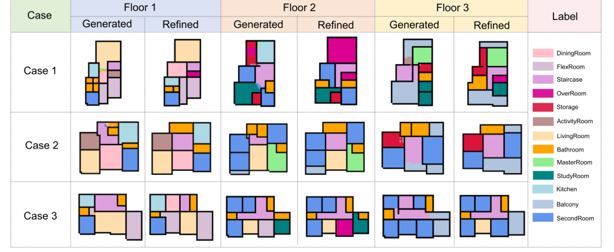
图8 各案例、各楼层的初始户型与人工修正后结果
门窗墙的生成与修正结果见图9。模型以修正后的户型为条件，生成墙体、门窗与开放空间分隔，再由工程师调整门窗和空间分隔的位置，满足通行、采光与通风需求。图中对照展示了三个案例各楼层的初始生成结果与修正结果，修正后的建筑构件信息继续传递给柱布置模型。
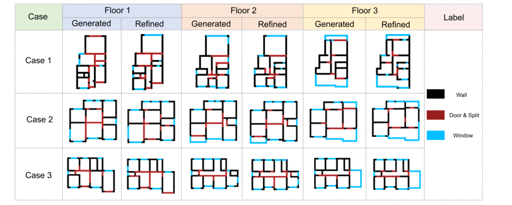
图9 各案例、各楼层的门窗墙生成结果与人工修正后结果
柱布置的生成与修正结果见图10。模型以房间布局和门窗墙信息为条件，生成各层柱位置；随后通过规则调整与人工修正，协调不同楼层的柱网，形成合理的传力路径。图中对照展示了三个案例各层的初始生成结果与修正结果，体现了从单层柱布置到跨楼层协调的过程。
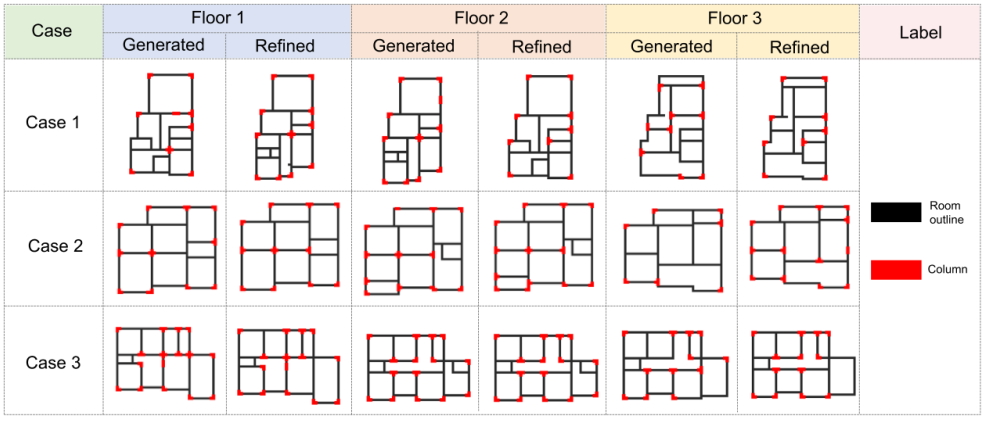
图10 各层柱布置生成结果与协调修正后结果
梁布置和截面设计完成后，三个案例连接到PKPM。图11展示各案例首层的梁柱布置及截面信息。从最初的空间需求到可进行结构分析的方案，建筑与结构生成在同一条设计流程中完成衔接。
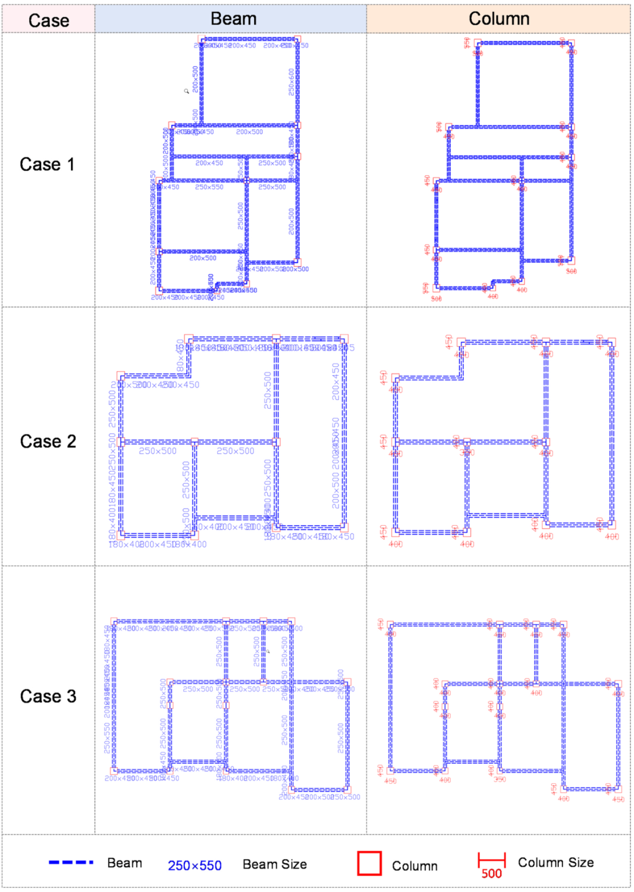
图11 三个案例首层梁柱布置及截面尺寸，单位mm
4.2 方案“画出来”，还要经得起计算
完成方案修正后，研究使用PKPM进行结构计算。三个案例的力学指标见表4，均满足论文采用的规范限值。
| 指标 | 案例1 | 案例2 | 案例3 | 规范 限值 |
|---|---|---|---|---|
表4 三个案例的结构力学指标
4.3 437分钟到39分钟，时间省在哪里？
人工基线由6名工程师参与，专业经验为4—17年，平均9.5年。计时覆盖需求与外轮廓输入、初步建筑和结构方案以及验证；AI辅助流程也计入结果检查与必要的人工修正。平均用时对比如表5。
| 设计阶段 | 人工流程 | AI辅助流程 |
|---|---|---|
| 16分钟 | ||
| 9分钟 | ||
| 8分钟 | ||
| 3分钟 | ||
| 3分钟 | ||
| 总计 | 437分钟 | 39分钟 |
表5 案例平均设计用时（“未执行”对应原表“/”，表示AI设计流程未进行该项操作）
AI辅助流程的平均用时由人工流程的437分钟降至39分钟，用时减少约91%。主要收益来自减少重复性的空间划分、构件布置和截面设计操作。
05
从单项生成走向全流程设计
（1）贯通建筑与结构的AI初步设计全流程。研究以建筑需求与外轮廓为起点，连接户型、门窗墙、柱布置、梁布置、梁柱截面和PKPM验证，使建筑方案的生成与结构方案的设计形成连续过程。
（2）建立支撑跨阶段生成的数据表达与模型适配方法。迁移学习改善有限数据下的户型生成，特征通道与任务掩膜将建筑信息转化为下游约束。户型与建筑构件的Micro IoU分别为0.6165和0.7479，柱布置IoU为0.7885。
（3）通过真实住宅案例验证全流程的可行性与效率。三个案例经人工协调修正后满足论文所列结构指标，平均用时从437分钟降至39分钟。AI生成、工程师协调与结构计算共同完成了从需求到方案的设计任务。
06
论文与开放资源
50天免费在线阅读与下载：
https://authors.elsevier.com/c/1nvpbW4G4mlgn
数据集：
https://github.com/Iceberg-cloud/Chinese-detached-house-dataset
户型模型体验：
https://ai-structure.com/floor-plan-design/
07
后记
无论我们支持还是反对，5-10年内，AI打通常规工程的多专业全流程智能设计，且设计水平不低于一般工程师，估计是大概率的事件。我们未来的专业教育，如何适应AI发展带来的新形势，是一个非常值得深入探讨的问题。
---End---
QQ群
AI-structure-交流1群：741840451（已满）
AI-structure-交流2群：1053974604（欢迎加入）
商务问题请联系：
黄盛楠(huangshengnan@mail.tsinghua.edu.cn)
技术问题请联系：
廖文杰(liaowj17@tsinghua.org.cn)
从4000到4500，AI-structure Copilot再上新台阶(20260407)
AI-structure Copilot v0.4.5：结构设计参数与工具面板再升级，参数更完善，操作更便捷！(20260320)
合木智构喜提“国家高新技术企业”认证！(20260312)
AI-structure Copilot v0.4.4：安装更省心 + 校核更安心 + 报错不再“开盲盒”！(20260305)
AI-structure Copilot 又双叒叕增加新功能：建筑户型平面生成ChatHouseDiffusion(20260211)
AI-structure Copilot 新功能：建筑平面布置一键搞定！(20260209)
4000+！AI-structure Copilot再破纪录，助力设计提速(20260123)
AI-structure.com 2025年年终总结(20251226)
AI-structure Copilot兼容Revit(20251211)
中望与清华大学联合研发，推出国产CAD平台首款生成式结构设计AI助手(20251210)
AI-structure Copilot兼容中望CAD(20251120)
3500个实际工程！AI-structure Copilot加速进步(20251027)
手把手教你使用AIstructure-Copilot-V0.4.0的新功能：(2) 剪力墙结构智能设计与优化(20250913)
手把手教你使用AIstructure-Copilot-V0.4.0的新功能：(1) 基于智能识图的CAD图纸前处理(20250912)
AIstructure-Copilot-V0.3.9：框架和框架-核心筒智能设计模块增加一键导出PKPM/YJK模型功能(20250828)
AIstructure-Copilot-V0.3.7：框架结构智能设计新增半框梁和次梁智能设计功能，软件用户界面设计更新(20250703)
2500→3000！AIstructure用户设计项目数突破3000个(20250609)
AIstructure-Copilot-V0.3.6：新增框架结构智能设计功能(20250606)
AIstructure用户设计项目数突破2500个！(20250314)
论文：生成式智能结构设计在建筑投标中的应用案例(20250218)
大家一起玩AI | AIstructure-API开放生态秀：基准方中参数化工具TigerKin实现智能生成设计(20250212)
AI-structure.com 2024年终总结(20241228)
0→2000！AIstructure用户设计项目突破2000个(2024/12/02)
独AI不如众AI，AIstructure二次开发接口API开放试用！(20241104)
AIstructure-Copilot V0.3.0 增加图层自动提取功能，墙梁联合优化改进设计效果(20241018)
AIstructure官网全面升级，英文版上线(20240909)
AIstructure-Copilot-V0.2.9 梁布置设计算法改进(20240830)
AIstructure-Copilot-v0.2.8软件全过程操作演示视频(20240809)
AIstructure-Copilot-V0.2.8软件使用温馨小贴士(20240726)
结构生成式智能设计AI-structure 2024上半年小结(20240628)
AIstructure-Copilot-v0.2.7技术背景（1）：基于PKPM API的自动化建模和计算分析(20240522)
AIstructure-Copilot-v0.2.7：新增后处理功能，云端完成PKPM结构计算和AIstructure优化(20240520)
AIstructure-Copilot-v0.2.6：给马儿换上精饲料，AIstructure设计效果持续改善(20240511)
AIstructure-Copilot-v0.2.2：梁布置设计功能更新(20240308)
AIstructure-Copilot-v0.1.7功能更新：实现多标准层的PKPM/YJK自动建模(20231222)
AIstructure-Copilot实现“三驾马车”驱动：Diffusion Model智能设计上线！(20231103)
AIstructure-Copilot-v0.1.2更新：精细化考虑抗震设计条件影响的全新GNN版本，请您来试试(20230928)
ai-structure.com：剪力墙结构材料用量AI预测模块上线测试(20230731)
AIstructure-Copilot：嵌入CAD平台的结构智能设计助手(20230711)
建筑结构生成式智能设计在日内瓦国际发明展上获“评审团特别嘉许金奖”(20230519)
ai-structure.com：土木工程自然语言规则AI解译模块上线测试(20230513)
AI剪力墙设计问卷调查结果(20230508)
相关论文
Liao WJ, Lu XZ, Huang YL, Zheng Z, Lin YQ, Automated structural design of shear wall residential buildings using generative adversarial networks, Automation in Construction, 2021, 132: 103931. DOI: 10.1016/j.autcon.2021.103931.
Lu XZ, Liao WJ, Zhang Y, Huang YL, Intelligent structural design of shear wall residence using physics-enhanced generative adversarial networks, Earthquake Engineering & Structural Dynamics, 2022, 51(7): 1657-1676. DOI: 10.1002/eqe.3632.
Zhao PJ, Liao WJ, Xue HJ, Lu XZ, Intelligent design method for beam and slab of shear wall structure based on deep learning, Journal of Building Engineering, 2022, 57: 104838. DOI: 10.1016/j.jobe.2022.104838.
Liao WJ, Huang YL, Zheng Z, Lu XZ, Intelligent generative structural design method for shear-wall building based on “fused-text-image-to-image” generative adversarial networks, Expert Systems with Applications, 2022, 118530, DOI: 10.1016/j.eswa.2022.118530.
Fei YF, Liao WJ, Zhang S, Yin PF, Han B, Zhao PJ, Chen XY, Lu XZ, Integrated schematic design method for shear wall structures: a practical application of generative adversarial networks, Buildings, 2022, 12(9): 1295. DOI: 10.3390/buildings1209129.
Fei YF, Liao WJ, Huang YL, Lu XZ, Knowledge-enhanced generative adversarial networks for schematic design of framed tube structures, Automation in Construction, 2022, 144: 104619. DOI: 10.1016/j.autcon.2022.104619.
Zhao PJ, Liao WJ, Huang YL, Lu XZ, Intelligent design of shear wall layout based on attention-enhanced generative adversarial network, Engineering Structures, 2023, 274: 115170. DOI: 10.1016/j.engstruct.2022.115170.
Zhao PJ, Liao WJ, Huang YL, Lu XZ, Intelligent beam layout design for frame structure based on graph neural networks, Journal of Building Engineering, 2023, 63, Part A: 105499. DOI: 10.1016/j.jobe.2022.105499.
Zhao PJ, Liao WJ, Huang YL, Lu XZ, Intelligent design of shear wall layout based on graph neural networks, Advanced Engineering Informatics, 2023, 55:101886, DOI: 10.1016/j.aei.2023.101886
Liao WJ, Wang XY, Fei YF, Huang YL, Xie LL, Lu XZ, Base-isolation design of shear wall structures using physics-rule-co-guided self-supervised generative adversarial networks, Earthquake Engineering & Structural Dynamics, 2023, 52(11): 3281-3303. DOI:10.1002/eqe.3862.
Feng YT, Fei YF, Lin YQ, Liao WJ, Lu XZ, Intelligent generative design for shear wall cross-sectional size using rule-embedded generative adversarial network, Journal of Structural Engineering-ASCE, 2023, 149(11). 04023161. DOI:10.1061/JSENDH.STENG-12206.
Fei YF, Liao WJ, Lu XZ, Guan H, Knowledge-enhanced graph neural networks for construction material quantity estimation of reinforced concrete buildings, Computer-Aided Civil and Infrastructure Engineering, 2024, 39(4): 518-538. DOI: 10.1111/mice.13094.
Zhao PJ, Fei YF, Huang YL, Feng YT, Liao WJ, Lu XZ, Design-condition-informed shear wall layout design based on graph neural networks, Advanced Engineering Informatics, 2023, 58: 102190. DOI: 10.1016/j.aei.2023.102190.
Fei YF, Liao WJ, Lu XZ, Taciroglu E, Guan H, Semi-supervised learning method incorporating structural optimization for shear-wall structure design using small and long-tailed datasets, Journal of Building Engineering, 2023, 79: 107873. DOI：10.1016/j.jobe.2023.107873
Liao WJ, Lu XZ, Fei YF, Gu Y, Huang YL, Generative AI design for building structures, Automation in Construction, 2024, 157: 105187. DOI: 10.1016/j.autcon.2023.105187
Zhao PJ, Liao WJ, Huang YL, Lu XZ, Beam layout design of shear wall structures based on graph neural networks, Automation in Construction, 2024, 158: 105223. DOI: 10.1016/j.autcon.2023.105223
Qin SZ, Liao WJ, Huang SN, Hu KG, Tan Z, Gao Y, Lu XZ, AIstructure-Copilot: assistant for generative AI-driven intelligent design of building structures, Smart Construction, 2024, DOI: 10.55092/sc20240001
Gu Y, Huang YL, Liao WJ, Lu XZ, Intelligent design of shear wall layout based on diffusion models, Computer-Aided Civil and Infrastructure Engineering, 2024, 39(23):3610-3625. DOI: 10.1111/mice.13236
Fei YF, Liao WJ, Zhao PJ, Lu X*, Guan H, Hybrid surrogate model combining physics and data for seismic drift estimation of shear-wall structures, Earthquake Engineering & Structural Dynamics, 2024, 53(10): 3093-3112. DOI: 10.1002/eqe.4151
Han J, Lu XZ, Gu Y, Cai Q, Xue HJ, Liao WJ, Optimized data representation and understanding method for the intelligent design of shear wall structures, Engineering Structures, 2024, 315: 118500. DOI: 10.1016/j.engstruct.2024.118500
Qin SZ, Guan H, Liao WJ, Gu Y, Zheng Z, Xue HJ, Lu XZ, Intelligent design and optimization system for shear wall structures based on large language models and generative artificial intelligence, Journal of Building Engineering, 2024, 95: 109996. DOI: 10.1016/j.jobe.2024.109996
Wang ZH, Yue Y, Chen Y, Liao WJ, Li CS, Hu KG, Tan Z, Lu XZ. Expert experience-embedded evaluation and decision-making method for intelligent design of shear wall structures. Journal of Computing in Civil Engineering-ASCE, 2025, 39(1). DOI: 10.1061/JCCEE5.CPENG-6076
Tan Z, Qin SZ, Hu KG, Liao WJ, Gao Y, Lu XZ, Intelligent generation and optimization method for the retrofit design of RC frame structures using buckling-restrained braces, Earthquake Engineering & Structural Dynamics, 2025, 54(2): 530-547. DOI: 10.1002/eqe.4268
Yu Y, Chen Y, Liao WJ, Wang ZH, Zhang SL, Kang YJ, Lu XZ, Intelligent generation and interpretability analysis of shear wall structure design by learning from multidimensional to high-dimensional features, Engineering Structures, 2025, 325: 119472. DOI: 10.1016/j.engstruct.2024.119472
Qin SZ, Liao WJ, Huang YL, Zhang Shulu, Gu Y, Han J, Lu XZ, Intelligent design for component size generation in reinforced concrete frame structures using heterogeneous graph neural networks, Automation in Construction, 2025, 171: 105967.
Xia JK, Liao WJ, Han B, Zhang SL, Lu XZ, Intelligent co-design of shear wall and beam layouts using a graph neural network, Automation in Construction, 2025, 172: 106024.
Qin SZ, Liao WJ, Tan Z, Hu KG, Gao Y, Lu XZ, Comparative analysis of intelligent retrofit design methods of RC frame structures using buckling-restrained braces. Bulletin of Earthquake Engineering, 2025, DOI: 10.1007/s10518-025-02164-3
Liao WJ, Zhang ZL, Liu B, Lu XZ, Liu DF, Liu Q, Duan ZJ, Liu C, Intelligent zoning design of concrete-faced rockfill dams using image-parameter fusion enhanced generative adversarial networks, Engineering Structures, 2025, 339: 120662. DOI: 10.1016/j.engstruct.2025.120662
Qin SZ, Fei YF, Liao WJ, Lu XZ*, Leveraging data-driven artificial intelligence in optimization design for building structures: A review, Engineering Structures, 2025, 341: 120810. DOI: 10.1016/j.engstruct.2025.120810
Fei YF, Lu XZ, Liao WJ, Guan H, Data enhancement for generative AI design of shear wall structures incorporating structural optimization and diffusion models, Advances in Structural Engineering, 2025, DOI: 10.1177/13694332251353614
Gu Y, Qin SZ, Liao WJ, Lu XZ*, Intelligent design of dimensions of reinforced concrete frame structure components using diffusion models, Computers in Industry, 2026, 175: 104428. DOI: 10.1016/j.compind.2025.104428
Han J, Liao WJ*, Lu XZ*, Gu Y, Zhang ZL, Liu B, Duan ZJ, Mechanics-embedded diffusion with closed-loop denoising for intelligent zoning design of concrete-faced rockfill dams, Advanced Engineering Informatics, 2026, 76: 105020. DOI: 10.1016/j.aei.2026.105020
Zhuang WJ, Liao WJ*, Qin SZ, Zhang SL, Miao ZW, Lu XZ, A diffusion-based sequential generative workflow for AI-assisted architectural and structural design of detached houses, Engineering Structures, 2027, 370: 123934. DOI: 10.1016/j.engstruct.2026.123934
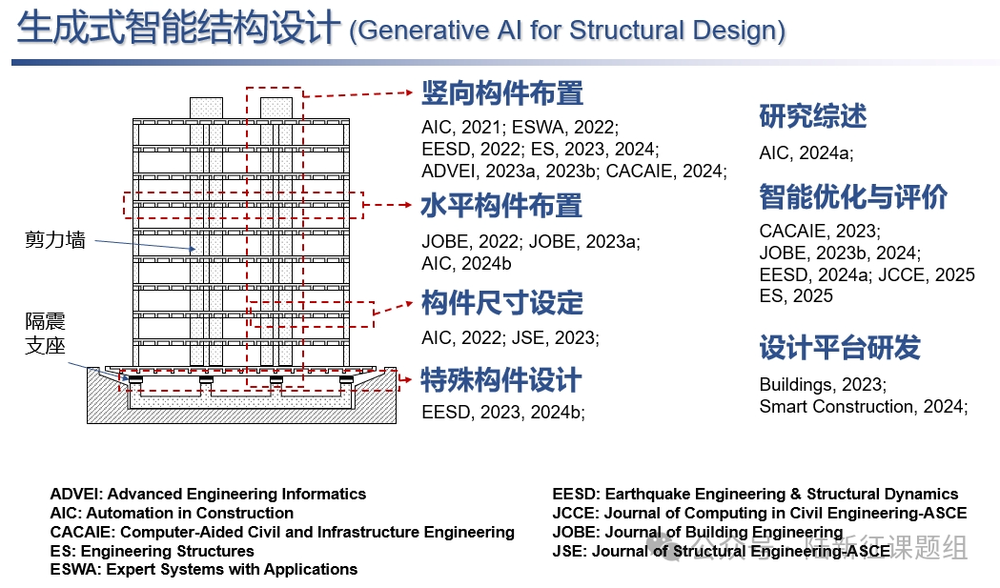
学术报告视频
论文和专利
---End--